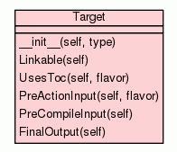

Class Target
source code

Target represents the paths used within a single gyp target.
Conceptually, building a single target A is a series of steps:
1) actions/rules/copies generates source/resources/etc. 2) compiles
generates .o files 3) link generates a binary
(library/executable) 4) bundle merges the above in a mac
bundle
(Any of these steps can be optional.)
From a build ordering perspective, a dependent target B could just
depend on the last output of this series of steps.
But some dependent commands sometimes need to reach inside the box.
For example, when linking B it needs to get the path to the static
library generated by A.
This object stores those paths. To keep things simple, member
variables only store concrete paths to single files, while methods
compute derived values like "the last output of the
target".
|
|
__init__(self,
type)
x.__init__(...) initializes x; see help(type(x)) for signature |
source code
|
|
|
|
Linkable(self)
Return true if this is a target that can be linked against. |
source code
|
|
|
|
UsesToc(self,
flavor)
Return true if the target should produce a restat rule based on a TOC
file. |
source code
|
|
|
|
PreActionInput(self,
flavor)
Return the path, if any, that should be used as a dependency of any
dependent action step. |
source code
|
|
|
|
PreCompileInput(self)
Return the path, if any, that should be used as a dependency of any
dependent compile step. |
source code
|
|
|
|
FinalOutput(self)
Return the last output of the target, which depends on all prior
steps. |
source code
|
|
|
Inherited from object:
__delattr__,
__format__,
__getattribute__,
__hash__,
__new__,
__reduce__,
__reduce_ex__,
__repr__,
__setattr__,
__sizeof__,
__str__,
__subclasshook__
|
|
Inherited from object:
__class__
|
|
x.__init__(...) initializes x; see help(type(x)) for signature
- Overrides:
object.__init__
- (inherited documentation)
|